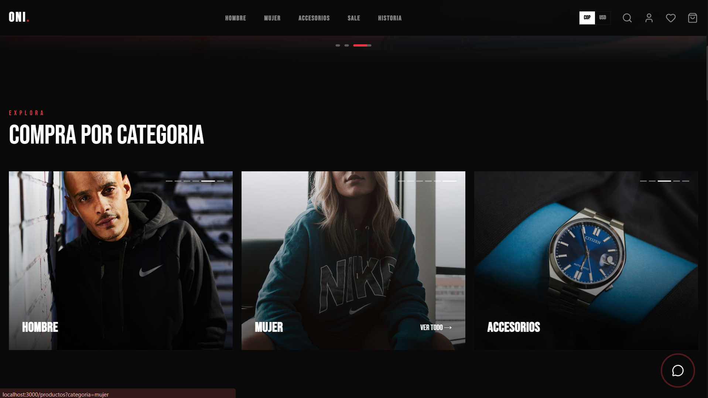
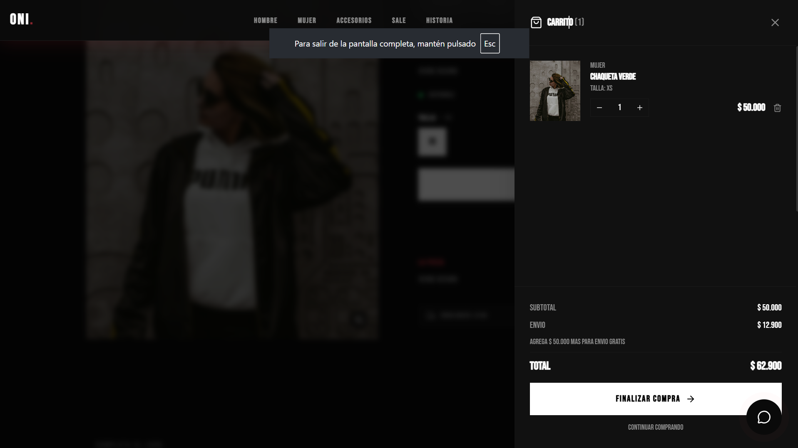
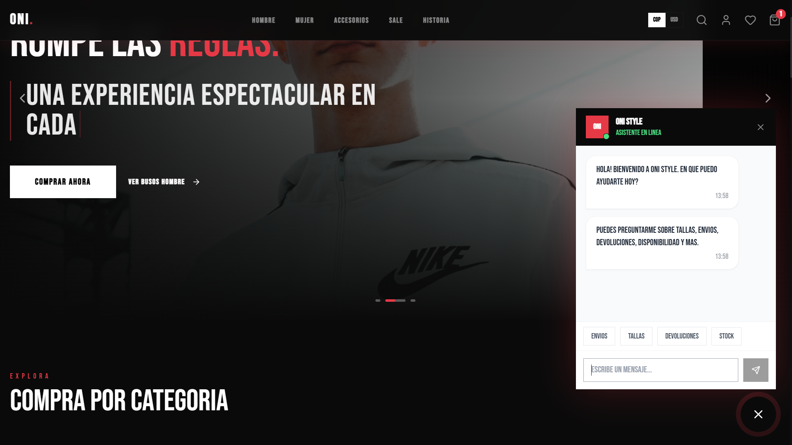

Oni Style
Problema: las tiendas de ropa que apenas empiezan tienen poca visibilidad, casi no tienen clientes y no cuentan con una forma fácil de vender sus productos.
Solución: una página web que muestra los productos, permite hacer pedidos (a domicilio o para recoger en el local), muestra el WhatsApp y la ubicación de la tienda, y tiene un chat propio para que cliente y tienda se comuniquen.
Mi parte: construí el frontend con Next.js y probé la aplicación para encontrar y corregir errores. Está en desarrollo, con un despliegue de prueba en Render.
- Next.js
- Node.js
- PostgreSQL
- Prisma